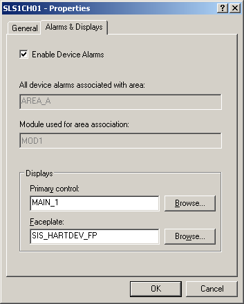

Plant areas
Each module is associated with a single plant area. Even if the module appears in the DeltaV Explorer under a unit module and the unit module is under a process cell, they are all under a plant area and, therefore, are associated with that plant area.
Devices and area association
Fieldbus and HART devices are also associated with areas. If the device is not associated with a control strategy its area defaults to the area of its associated controller or Logic Solver.
- HART device area association
-
HART device alerts default to the associated controller's alarm area (in the case of Logic Solvers, this is the Logic Solver's alarm area.). If you configure and saved an I/O block in a module that references the DST for the HART Device, the module's area becomes the alarm area for the device alerts. This area remains the associated alarm area until the reference or the module is deleted. If you delete the module, the area returns to the default controller area. If you rename the module, the new name is reflected as the associated module name for the device alerts. Also, if a second module is created with an I/O block referencing the same DST, the area remains assigned to the first module.
To change the area assignment, you must first delete the existing I/O reference in the existing module and then configure and save the different module with a new I/O reference.
You can find the area and module that the HART device alarms are currently associated with from the Alarms & Displays tab of the device Properties dialog as shown below.

- Fieldbus device area association
-
When you assign a module's function block to the primary function block in a fieldbus device, the device is associated with the plant area (and unit) that contains the referencing module. The primary function block of a device is the function block with the lowest block index number. This block normally appears as the first block under the device in the DeltaV Explorer. For fieldbus devices, if the module is deleted or if the module function block associated with the primary function block in a fieldbus device is deleted, the device defaults to the area associated with its controller.
Workstations and areas
Workstations can read and write parameters from anywhere in the system (unless restricted in the workstation Properties dialog) and they can monitor events and maintain a list of active alarms in plant areas that have been assigned to the workstation's Alarms and Events subsystem.
Workstations also generate their own hardware alarms. The ability to report hardware alarms must be enabled in the workstation's Properties dialog. Hardware alarms can be displayed in the alarm banner and the alarm summary control. From the alarm summary control and DeltaV Diagnostics, you can run the Condition Summary application. This application lists the conditions that are causing the hardware alarms. The condition can be suppressed or made active from the Condition Summary.
Any module or device that has an alarm reports it to all workstations to which the module's Plant Area is assigned. The alarm is reported to the user through the Alarm Banner and Alarm Summaries according to the user's assigned Plant Areas. If the workstations' Alarms and Events subsystem is enabled, the alarm is also logged to the Event Chronicle on the workstation.
You can add as many as 250 plant areas and assign the plant areas to specific workstations. Make these changes through the DeltaV Explorer. To assign an area to the Alarms and Events subsystem for a workstation, select the area, and then drag it to the workstation's Alarms and Events subsystem. To view the areas assigned to a workstation, click Alarms and Events (under the workstation name).
- When you assign an area to a workstation and download it, you must log off the workstation and log on again before you can see the associated alarms in the Alarm List.
- In order for system-wide events (such as logins, logouts, and downloads) to be recorded or other operator activities (such as alarm area filtering) to function correctly, the following applies:
Workstation type To record system-side events To ensure operator activities function correctly ProfessionalPLUS AREA_A must be assigned to the Alarms and Events subsystem. Assign AREA_A to the Alarms and Events subsystem. OR
If AREA_A is not assigned to Alarms and Events, then deselect the Restrict on-line changes to areas assigned to the Alarms and Events subsystem in the workstation Properties dialog.
Operator stations AREA_A must be assigned to the Alarms and Events subsystem. Assign AREA_A to the Alarms and Events subsystem. OR
If AREA_A is not assigned to Alarms and Events, then deselect the Restrict on-line changes to areas assigned to the Alarms and Events subsystem in the workstation Properties dialog.
Remote Client sessions AREA_A must be assigned to the Alarms and Events subsystem. AREA_A must be assigned to the Alarms and Events subsystem. - A module must also be assigned to the node where it is to execute (a controller or an Application Station is acceptable for some modules). This is done by assigning (dragging) the module to the Assigned Modules subsystem under the desired execution node.
If you do not want an operator to have the authority to control an area (that is, have write parameters in associated modules), you can configure your system so that the operator has no parameter writing privileges (security write keys) in that area. Subsequently, when that operator is logged on, alarms from that area are not displayed in the Alarm Banner or the Alarm List pictures. This way, you can control which alarms are seen by a particular operator. To define which areas a user is responsible for, define parameter security write keys for specific areas in the DeltaV User Manager.
Additionally, you can configure the workstation to restrict control to only the areas assigned to the workstation through the workstation's Properties dialog. Therefore, when a user that has sitewide privileges logs on to the workstation, that user can only affect control to the areas assigned to the workstation. This prevents a user from controlling an area when the alarms cannot be displayed on the workstation. This is the default configuration when you create a workstation.
The workstation shows the alarms it processes to DeltaV Operate only if the current user has any parameter security write keys for the area that contains the alarm. For example:
|
Areas in the workstation's Alarms and Events subsystem |
A |
B |
C |
D |
||
|
Areas in which the user has write privileges |
C |
D |
E |
F |
||
|
Areas displayed in the Alarm Banner or Alarm List when this Operator is logged on |
C |
D |
Additionally, this user can only write to parameters in Areas C & D when logged on to this workstation (providing the user has the key for the lock to which the parameter is assigned).